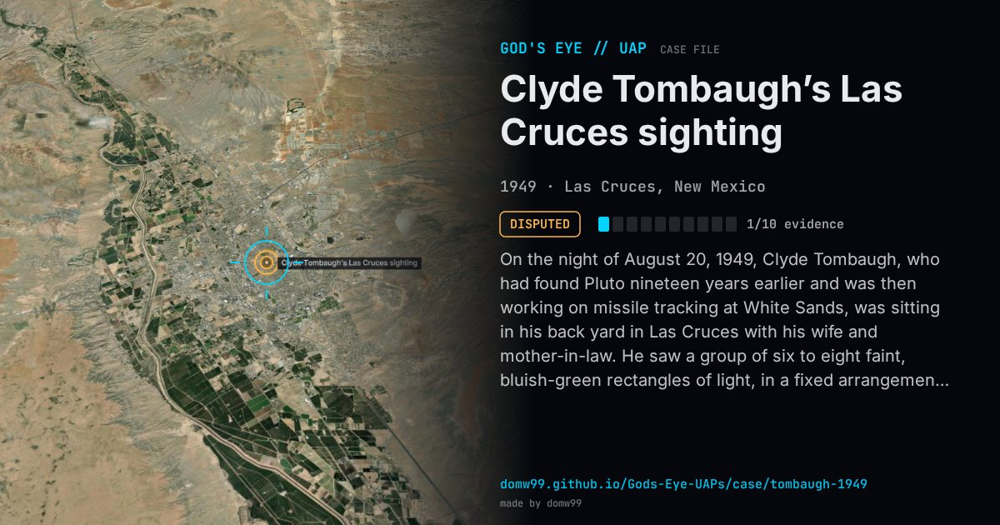

Clyde Tombaugh’s Las Cruces sighting

On the night of August 20, 1949, Clyde Tombaugh, who had found Pluto nineteen years earlier and was then working on missile tracking at White Sands, was sitting in his back yard in Las Cruces with his wife and mother-in-law. He saw a group of six to eight faint, bluish-green rectangles of light, in a fixed arrangement, pass overhead from the north-west and fade as they went toward the south-eastern horizon. “I was so unprepared for such a strange sight that I was really petrified with astonishment,” he wrote. He is probably the most eminent astronomer to have reported a UFO, and he went on to support the scientific study of them, while saying he could not take interstellar visitors seriously.
Explanation
Tombaugh never said it was a spacecraft. At the time he wrote that he doubted it was a reflection of anything on the ground, as nothing like it had appeared before or since. Later he thought the most likely cause was a reflection from an inversion layer, given how faint the lights were and how they faded as they moved away from the zenith.
What was seen
Shape: Six to eight faint, bluish-green rectangles of light in a geometrical group
Witnesses: Clyde Tombaugh, discoverer of Pluto, his wife and his mother-in-law
Duration: About 3 seconds (his wife saw it for about 1½ seconds)